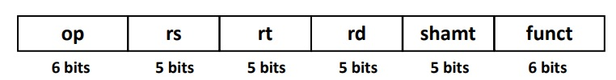
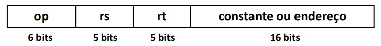
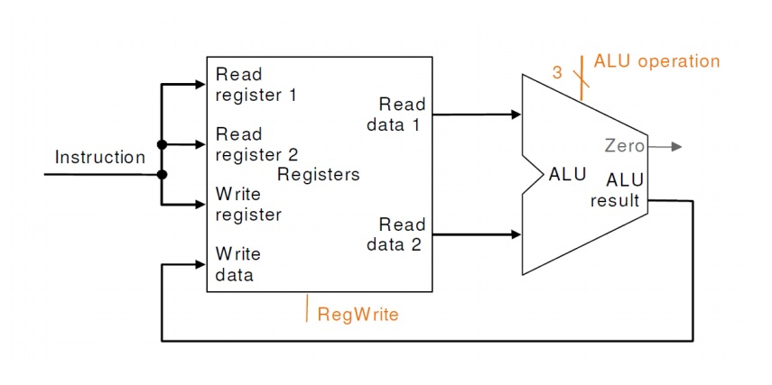
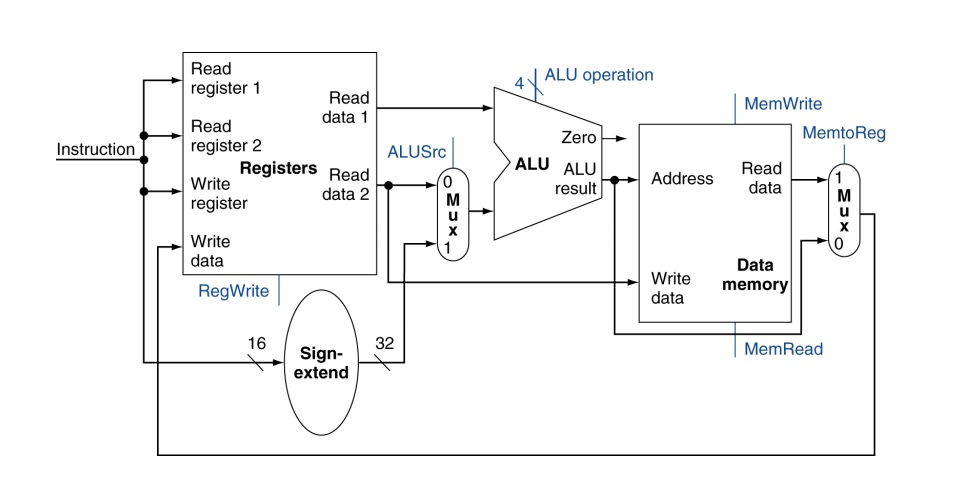
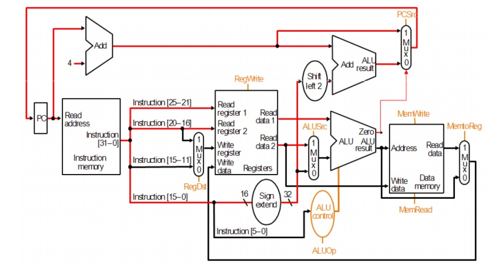
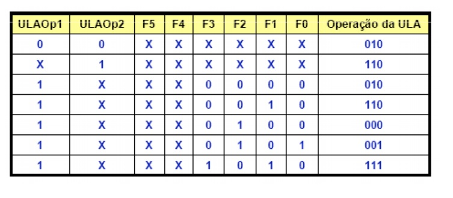
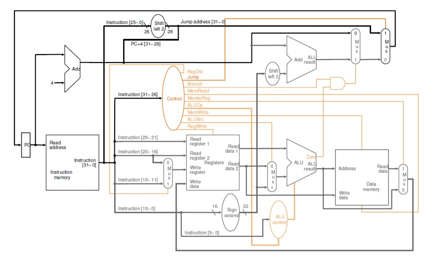

Arquitetura MIPS Monociclo
Para entendermos o Monociclo, é necessário entender os 3 formatos de instrução: Tipos R, I e J.
TIPO R:
O tipo R envolve operações registrador-registrador, como por exemplo ADD e SUB. Nesse tipo, os bits são organizados da seguinte forma:
Onde: OP é o opcode, RS e RT são os registradores de origem, RD é o registrador de destino, SHAMT a quantidade de bits a serem deslocados e FUNCT a função a ser executada.
TIPO I:
O tipo I envolve operações com valor imediato, como por exemplo ADDI e BEQ. Nesse tipo, os bits são organizados da seguinte forma:
Onde: OP é o opcode, RS é o registrador a ser operado, RT é o registrador de destino e a constante pode ir de -2 elevado a 15 até 2 elevado a 15 -1.
TIPO J:
O tipo J envolve operações de desvio, como por exemplo Jump. Nesse tipo, os bits são organizados da seguinte forma:
Onde: OP é o opcode e ENDEREÇO é o endereço destino.
Todas as instruções tem tamanho de 32 bits, com o OP code sempre nos 6 bits mais significativos.
Componentes:
- Banco de Registradores
- Unidade de Controle
- ULA
- Memória
- Entrada/Saída
- Multiplexadores
- Linhas de dados
- Linhas de controle
Conjunto de instruções básicas:
- Instruções de memória: lw e sw
- Instruções aritméticas: add, sub
- Instruções lógicas: or, slt
- Instruções de desvio: beq
A unidade de controle
Para uma explicação direta das instruções, antes temos que entender a unidade de controle. Ela possui 8 linhas, chamadas de linhas de controle. Essas linhas são:
- RegDst:
- Branch:
- MemRead:
- MemWrite:
- ALUOp:
- MemToReg:
- ALUSrc:
- RegWrite:
Seleciona qual registrador é o destino
Permite a realização de um branch
Indica que deve ser feita a leitura da memória
Indica que deve ser feita a escrita na memória
Indica qual operação deve ser feita na ULA
Indica que a informação que sai da memória deve ser escrita no registrador
Seleciona de onde vem o valor para operação na ULA
Indica que deve ser feita a escrita no registrador
Execução das instruções:
Busca:
Instruções de tipo R:
Instruções de tipo I:
Desvio:
Na busca da instrução, a instruction memory recebe a posição PC da memória e PC tem um acrescimo de 4, para registrar a próxima instrução.
As instruções de tipo R utilizam o banco de registradores e a ULA. Ela lê dois registradores, faz a operação na ULA e escreve o resultado em um registrador. Esse conjunto é representado na imagem abaixo:
Além disso, a unidade de controle autoriza a escrita em registradores e o uso da ULA para realizar a função solicitada.
O valor imediato possui 16 bits e a leitura do endereço é feita através de um deslocamento desse mesmo tamanho.
Além disso, a unidade de controle autoriza a escrita na memória para o Store Word e a leitura da mesma para o Load Word.
No caso do desvio, tendo o endereço destino para PC = PC + 4 + desvio, é feita a leitura de dois registradores, que são comparados na ULA e, se forem iguais, o desvio é permitido.
Como vemos no desenho, a saída da ULA libera um sinal que permite que o endereço recebido por PC seja o que possui desvio.
Por fim, é necessário entenderemos a ALU Control, unidade de controle da ULA. Sabemos que as operações LW/SW usam a adição da ULA, para calcular o endereço, que a BEQ usa a subtração da ULA, para verificar a igualdade, e que as instruções de tipo R dependem de FUNCT. Com isso, cria-se a tabela verdade abaixo.
E, finalmente, temos a visão geral da estrutura do Monociclo, com os diferentes casos de jump com diferentes tratamentos pela UC ou ULA, o tratamento da instrução de PC, o acesso de leitura e escrita em registradores, controlados pela UC, a ULA e usa unidade de controle(ALU Control), que também é controlada pela UC e a memória, com seu acesso, para leitura e escrita, assim como o destino de sua saída, controlados pela Unidade de Controle:
